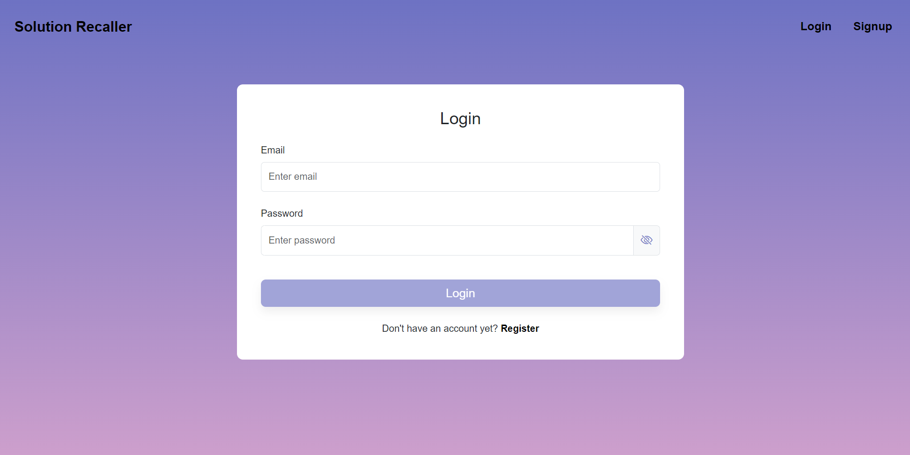
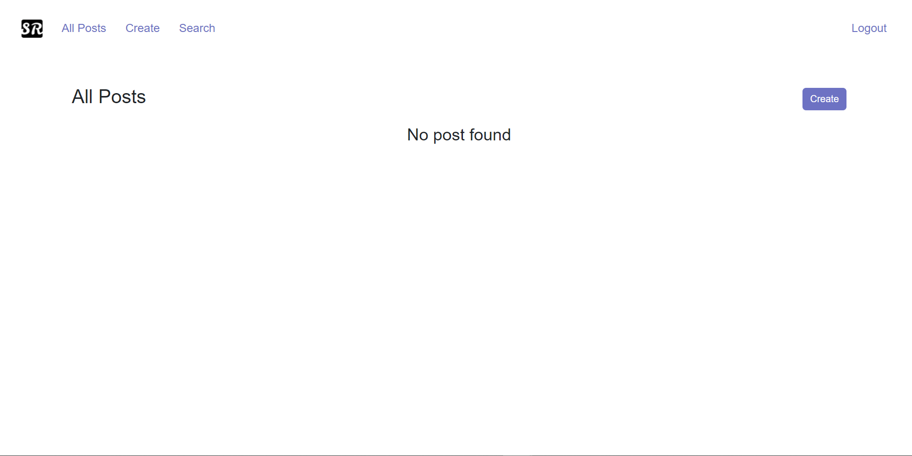
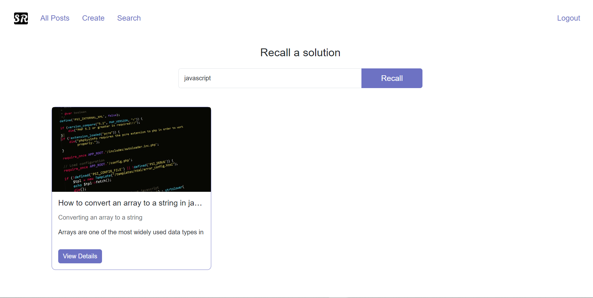
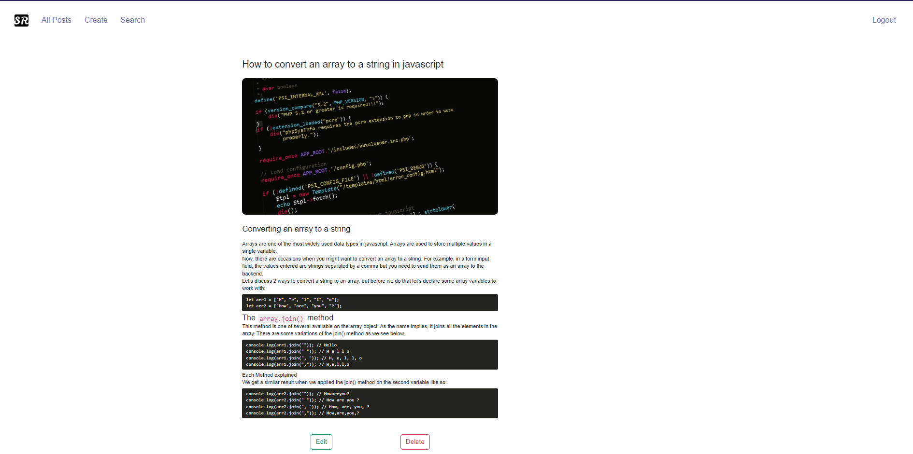

Step 1
Login if you have an account or register if you don't have one.

Step 2

Click the create button on the top right corner
Step 3
Fill in the details of the problem, such as title, description and solution and click the create button. You can format your solution using the in-built text editor.

Step 4

Navigate to the search page to search for the saved problem. Enter your search keyword in the input field, click the recall button and see a list of post matching your search keyword.
Step 5
Once the desired solved problem has been found, click on the title of the post to see the details of a problem. you can choose to edit the problem details or delete it. If a problem more than one solution, you can just edit the problem and add the multiple solutions in the text editor and format it as you like.
